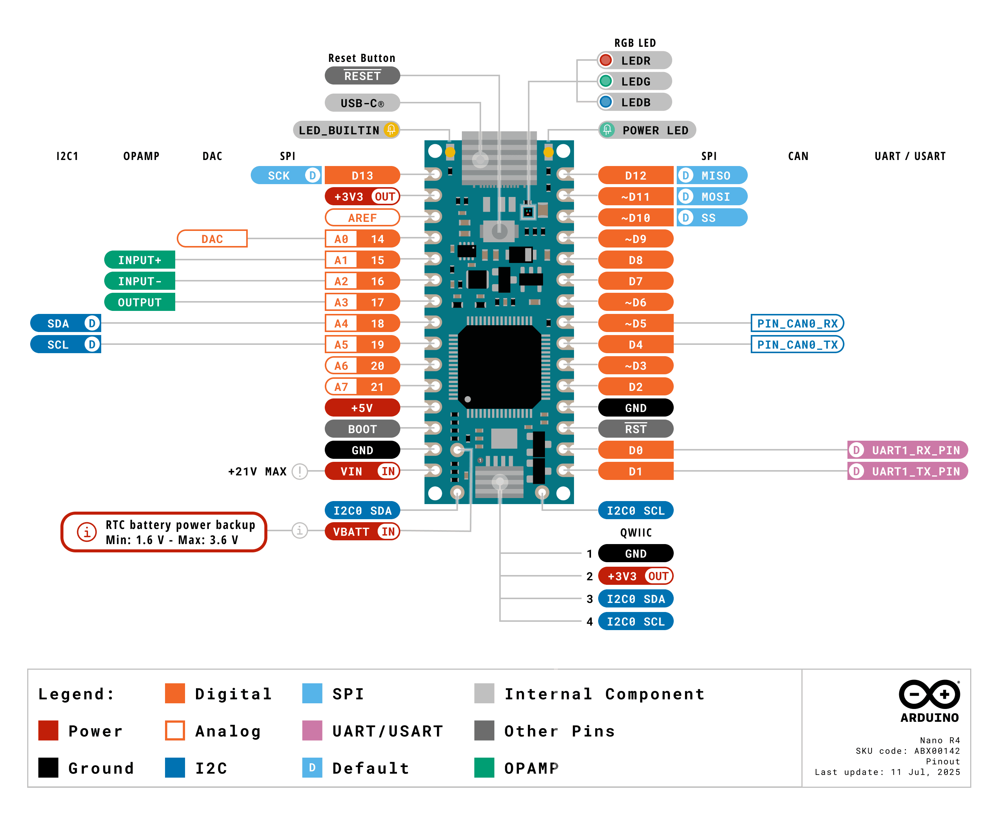

Arduino Nano R4
Der Arduino Nano R4 ist das Board, das wir in diesem Kurs verwenden. Er liest Taster und Sensoren ein, steuert LEDs oder Displays und kann sich über USB-C als Tastatur, Maus oder Mediensteuerung am Computer anmelden.
Das Wichtigste auf einen Blick
| Eigenschaft | Arduino Nano R4 |
|---|---|
| Mikrocontroller | Renesas RA4M1, 32-Bit Arm Cortex-M4 |
| Taktfrequenz | 48 MHz |
| Speicher | 256 kB Flash, 32 kB RAM, 8 kB EEPROM |
| Logikspannung | 5 V; nur der Qwiic-Anschluss arbeitet mit 3,3 V |
| Anschlüsse | 14 digitale Pins, 8 analoge Eingänge, USB-C und Qwiic |
| Besonderheiten | HID, PWM, DAC, RTC, I²C, SPI, UART und CAN |
Über USB-C wird das Board mit Strom versorgt, programmiert und mit dem seriellen Monitor verbunden. Der kleine Formfaktor passt gut auf ein Breadboard.
Pins nicht überlasten
Ein Ein-/Ausgangspin darf mit höchstens 8 mA belastet werden. LEDs benötigen einen Vorwiderstand. Motoren, Relais, LED-Streifen und andere größere Verbraucher dürfen nie direkt an einem Pin betrieben werden; dafür ist eine passende Treiberstufe notwendig.
Pinout

So liest und verwendest du das Pinout
Halte das Board wie im Bild: USB-C befindet sich oben, der Qwiic-Anschluss unten. Die grauen Linien zeigen, zu welchem Kontakt am Board eine Beschriftung gehört. Die Farben ordnen die Pins nach ihrer Funktion. Ein Pin kann mehrere Funktionen besitzen; im Sketch verwendest du immer die Bezeichnung, die direkt am Pin steht, zum Beispiel D4 beziehungsweise 4 oder A0.
Häufig verwendete Pins
| Beschriftung im Bild | Verwendung | Beispiel im Sketch |
|---|---|---|
D0 bis D21 |
Digitale Ein- und Ausgänge. D14 bis D21 sind dieselben Kontakte wie A0 bis A7 |
pinMode(4, OUTPUT); |
A0 bis A7 |
Analoge Eingänge. Bei digitaler Verwendung entsprechen sie D14 bis D21 |
analogRead(A0); |
~D3 ~D5 ~D6 ~D9 ~D10 ~D11 |
PWM, zum Beispiel zum Dimmen einer LED | analogWrite(3, 128); |
GND |
Gemeinsamer Minuspol der Schaltung | Mit GND des Bauteils verbinden |
+5V / +3V3 |
Versorgungsausgänge für passende Bauteile | Spannung des Bauteils vorher prüfen |
LED_BUILTIN |
Eingebaute orange LED | digitalWrite(LED_BUILTIN, HIGH); |
Pins im Code eindeutig benennen
Lege die verwendeten Pins am Anfang deines Sketches fest. So lässt sich die Verdrahtung später leicht ändern.
Kommunikationsanschlüsse
- I²C:
A4istSDA,A5istSCL. Dieser Bus wird im Code mitWireangesprochen. Der separate Qwiic-Anschluss führt ebenfalls I²C, arbeitet aber mit 3,3 V und verwendetWire1. - SPI:
D10istSS/CS,D11istMOSI/COPI,D12istMISO/CIPOundD13istSCK. - UART:
D0istRXundD1istTX. Diese Pins gehören zuSerial1;Serialläuft über USB-C. - CAN:
D4istCAN TX,D5istCAN RX. Zwischen Arduino und CAN-Leitung ist immer ein externer CAN-Transceiver erforderlich.
Wenn ein Pin für eine Schnittstelle verwendet wird, sollte er nicht gleichzeitig eine zweite Aufgabe übernehmen. Beispiel: Während I²C aktiv ist, nutzt du A4 und A5 nicht zusätzlich als analoge Eingänge.
Stromversorgung richtig anschließen
Für die ersten Versuche ist USB-C die einfachste und sicherste Stromversorgung. Für ein eigenständig betriebenes Projekt kann eine externe Spannung von 6 bis 21 V an VIN und GND angeschlossen werden. Verwechsle VIN nicht mit den Versorgungsausgängen +5V und +3V3.
Vor dem Umstecken
Trenne USB und externe Stromversorgung, bevor du die Schaltung veränderst. Verbinde niemals eine Versorgungsspannung mit einem digitalen oder analogen Signalpin. Der Qwiic-Anschluss und seine Module arbeiten mit 3,3 V, die normalen GPIO-Pins des Nano R4 mit 5 V.